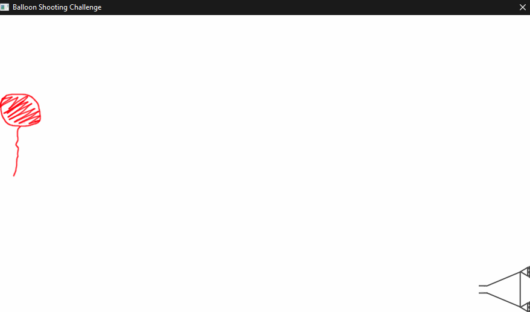

Balloon Shooting Challenge
Posted
My code can be found on GitHub: featherbear/smallbasic-balloon-shooting-game
A while ago I applied for a position at a company which taught children how to code…
Today I got an email back with a programming challenge, let’s have a crack at it!
The Challenge (click to expand)
In order to solve the challenge you will need to download and learn a new (and very simple) coding language, I hope you will enjoy the challenge.
Please install the Small Basic software and review the tutorial.
You can find more materials on the Small Basic site.
The Challenge
Develop a shooting game, the player goal is to shoot the balloon down.
Controls
- The player can move the cannon up and down using the arrow keys
- To fire a bullet the player will press [SPACE].
Rules
- The balloon should move up and down randomly.
- The player can shoot one bullet at a time.
- Only when the bullet is out of the game then the player can shoot again.
- The game ends when the balloon is shot down, please show the amount of missed shots.
- The bullet speed should be 1.5 times the speed of the balloon.
- The balloon can change directions (up or down) at any time.
Okay cool, Small Basic - I’ve heard of it but I’ve never used it before.
That can change.
Exploring Small Basic
So first thing’s first with learning any new language, is knowing how to write it!
The tutorial document (Introducing Small Basic.pdf) goes over the intro - though I’m going to summarise it here for my own reference.
Syntax (click to expand)
General
- No semicolons 🙃
- Variables are dynamically typed
- Strings and integers can be joined together (
"I am " + 19 + " years old!") - Indentation is not important
- Commenting:
' Start with a single quote
TextWindow.Write("Enter your name: ")
name = TextWindow.Read()
TextWindow.WriteLine("Hello, " + name + "!")
' TextWindow.WriteLine("You won't see this line")
Flow
- No switch-case
- If-Then-ElseIf-Then-Else-EndIf
- No OR, AND - We have to nest and stack If-Then and Else statement
- Logical operator EQ with single
= - Logical operator NEQ with
<>
Label:, Goto
- Yeah uh - no.
Loops
For-To-EndFor
For i = 1 To 24
TextWindow.WriteLine(i)
EndFor
For-To-Step-EndFor
For i = 10 To 1 Step -1
TextWindow.WriteLine(i)
EndFor
While-EndWhile
number = 0
While (number < 100)
number = number + 1
EndWhile
Maths
- No modulo operator - Use
Math.Remainder(n, modulo) - Division returns a float
Subroutines
Sub PrintTime
TextWindow.WriteLine(Clock.Time)
EndSub
Functions
- No functions exist
Arrays
SmallBasic’s array type is actually more like a dictionary, indexes can be integers and strings.
Also doesn’t look like we need to declare nor define our array variable. (screams internally)
Assignment of an array into another array is passed by copy, rather than reference
With that said, officially - indexing starts at 1 (ONE)
Graphics
SmallBasic gives us GraphicsWindow, Shape, and Turtle to do our graphical mayhem.
Co-ordinates are anchored from the top left
Coding Time
The first thing to do was to set up the game window
As per the genre of a classical 2D arcade shooting game, we’ll need the typical things:
- Player movement - The player will need to move up and down
- Enemy movement - The movement of the enemy
- Projectile movement - The movement of the gunball
- Score system - The number of gunballs shot. Final score is the number of missed shots (so score = n-1)
- Hit detection - Register if the projectile has hit the enemy
… and sprites!
… music and SFX would be nice too, but no thanks.
We sort of have a choice, to create the sprites first then fit the code around the sprites - or to write the code first and then fit the sprites to the code.
The latter is better,
but I did the first.
So fire up Photoshop (or Paint.NET in my case), and make a few sprites!
Step two was to set up the game window, something like an aspect ratio of 1.77:1 (measuring the dimensions of the game window in the challenge specifications)
Step three would be then to start writing the game code.
Since I had recently made the sprites, I wanted to write the code to display them on the screen.
Small Basic doesn’t have user functions, but only subprocedures (that’s kinda dumb…), meaning that the code in the subprocedure will be accessing arbitrary values in the global scope. ugh…
To keep my sanity, I made an array which would hold the arguments, and also another array to return values.
Arrays bother me, as you will read later on in the Final Thoughts, so for more sanity protection, I defined my args, rets, and objs ‘arrays’
So in similar fashion to writing in Assembly, before I call my obj_init ‘function’, I would load my arguments into the args array ‘registers’
Step four, implement player movement!
Small Basic doesn’t have AND, or OR operators, meaning that if you wanted to write something like
if (a && b) { ... }
You would have to write
If a Then
If b Then
...
EndIf
EndIf
The player movement would need to be restricted to the bounds of the game window, so as to not allow the player to move out of the screen
Step five, pew pew!
To implement the gunball (and its movement) we’ll need to use some sort of timer interval to move the gunball.
Small Basic has Shapes.Animate([shapeName], [x], [y], [durationInMilliseconds]) - but it seems to have an easing motion, which isn’t what we wanted, so I used the Shapes.Move function.
When the gunball leaves the screen, it should disappear, and the player will be allowed to fire a new gunball (maximum of one gunball on the screen at a time)
Step six, Up!
Aside: Pixar’s 2009 animation Up is actually such a powerful narration of love… anyway.
The balloon should move up and down the screen, and every while and then it should change direction - I chose a randomness 1%.
We also need to change the direction if the balloon reaches the bounds of the game window.
Since my balloon sprite has a string attached (and a balloon won’t pop if you poke it by the string), I allowed the bottom of the balloon sprite to pass the bounds of the game window.
Step seven was to code the collision / hit detection of the gunball and the balloon.
Because my balloon sprite had a string attached, I had to manually define the hitbox regions (where the balloon actually was in the sprite).
It was also circular, meaning that I would have to do some fancy maths for hit detection - but I wasn’t bothered
So yes, the hit detection is off, but oh well.
The last steps were to implement the end game message, which would tell the player the number of gunballs missed (aka, the number of gunballs fired minus one). Also a few more state variables and flags to tie up some loose ends (no string puns intended)
Game Time

Because of my not-so-well-written hit detection algorithm, I sometimes experienced false-positive game ends - as I would expect.
Otherwise, on the whole it works!!!
Final Thoughts
Small Basic combines Microsoft’s syntax ecosystem with something like Python’s syntax to create a beautiful mess.
That’s an overstatement though, Small Basic kinda sucks.
Firstly, arrays.
The thing that shocks me the most - that you don’t need to declare the type of the variable, but can instantly do something["like"] = "this" without even saying what something is.
Even Python would tell us that something is not defined.
Secondly, goto statements. Oh boy.
Whilst goto has its use (does it really???), I recommend against it as it’s not programmatic.
goto is used in the official tutorial, and that really irks me.
But that said, Small Basic does have its quality - Especially having a graphical framework (GraphicsWindow, Shapes, ImageList, Turtle) built-in. For introducing people to programming, I would say that it’s quite solid.
But that also said, something like Python also has the turtle library.
BaCk To ReAl PrOgRaMmInG iN hTmL